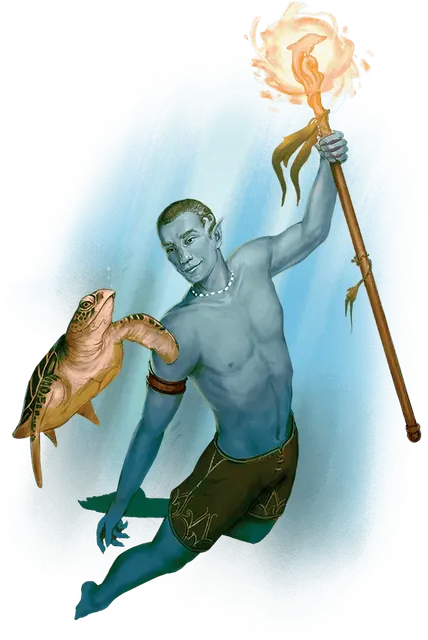

Морской эльф
Sea Elf

Морские эльфы влюбились в дикую красоту океана в первые дни существования мультивселенной. В то время как другие эльфы путешествовали из царства в царство, морские эльфы бороздили течения и исследовали воды многих миров. Сегодня этих эльфов можно найти везде, где существуют океаны, а также на Стихийном Плане Воды.
Особенности морского эльфа
Вы обладаете следующими особенностями.
Увеличение характеристик. Либо значение одной характеристики по вашему выбору увеличивается на 2, а другой — на 1, либо значение трёх различных характеристик по вашему выбору увеличивается на 1.
Возраст. Как и другие эльфы, морской эльф может прожить более 750 лет.
Скорость. Ваша базовая скорость ходьбы — 30 футов и вы обладаете скоростью плаванья, равную вашей скорость ходьбы.
Вид существа. Вы — Гуманоид. Вы также считаетесь эльфом для любого необходимого условия или эффекта, который требует, чтобы вы были эльфом.
Размер. Ваш размер — Средний.
Тёмное зрение. На расстоянии 60 футов вы при тусклом освещении можете видеть так, как будто это яркое освещение, и в темноте так, как будто это тусклое освещение. В темноте вы не можете различать цвета, только оттенки серого.
Наследие фей. Вы с преимуществом совершаете спасброски для того чтобы избежать или окончить на себе состояние очарованный.
Дитя морей. Вы можете дышать как воздухом, так и под водой, и вы обладаете сопротивлением урону холодом.
Друг морей. Водные животные имеют необычайную близость с вашим народом. Вы можете донести простые идеи до любого Зверя, у которого есть скорость плавания. Они могут понимать значение ваших слов, хотя у вас нет никакой специальной способности понять их в ответ.
Обострённые чувства. Вы получаете владение навыком Восприятие.
Транс. Вам нет необходимости спать и вас невозможно магически усыпить. Вы можете закончить продолжительный отдых за 4 часа, если проводите это время в медитации, подобной трансу, во время которой вы сохраняете сознание.
Всякий раз, когда вы заканчиваете этот транс, вы можете получить два владения, которых у вас нет, каждое из которых должно быть оружием или инструментом по вашему выбору, выбранным из «Книги игрока». Вы мистическим образом приобретаете эти владения, извлекая их из общей эльфийской памяти, и сохраняете их до тех пор, пока не закончите свой следующий продолжительный отдых.
Языки. Ваш персонаж может говорить, читать и писать на Общем и ещё одном языке, который по вашему мнению подходит для персонажа.